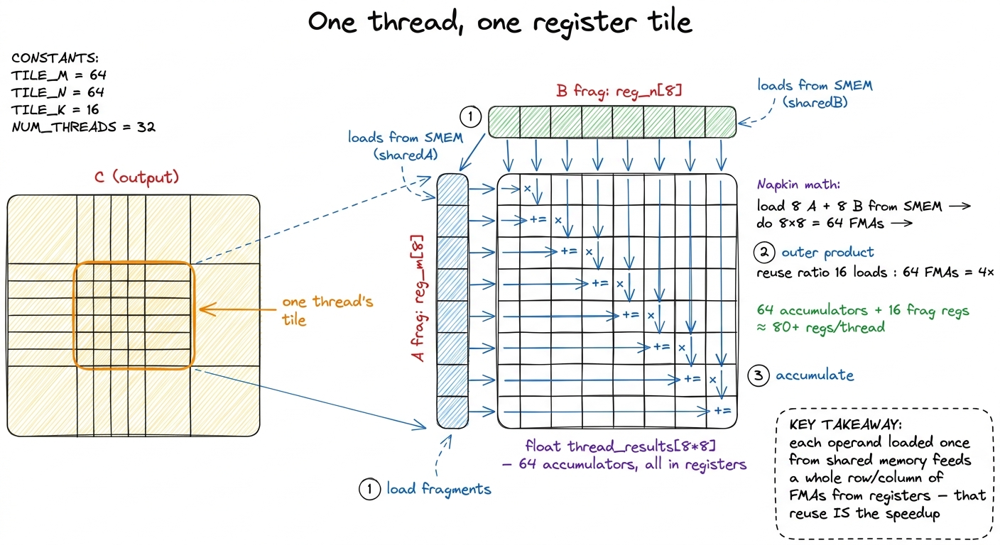
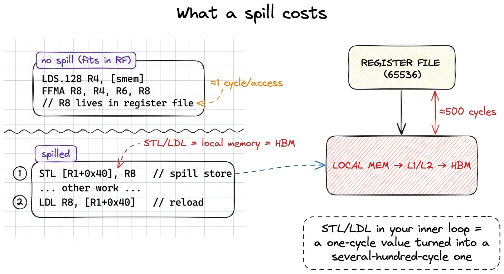
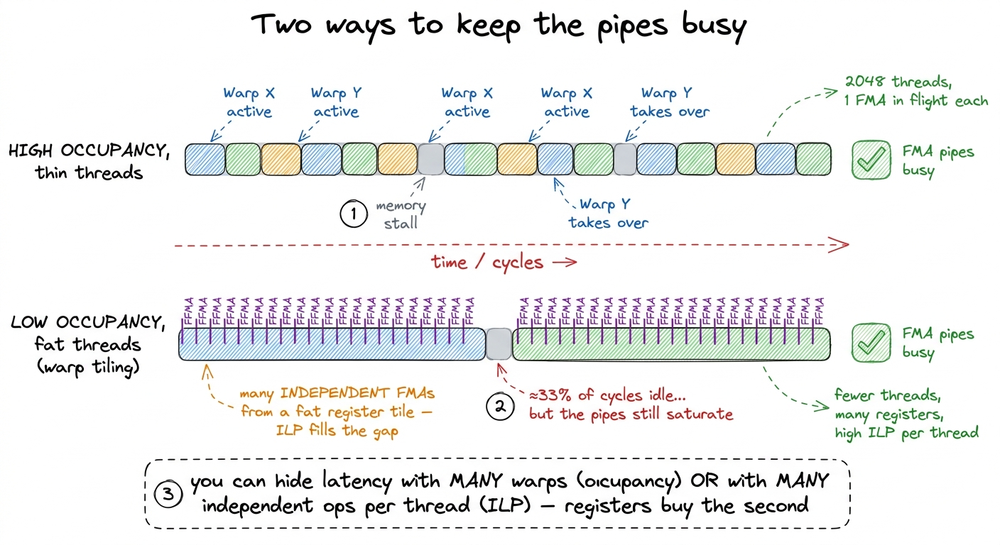
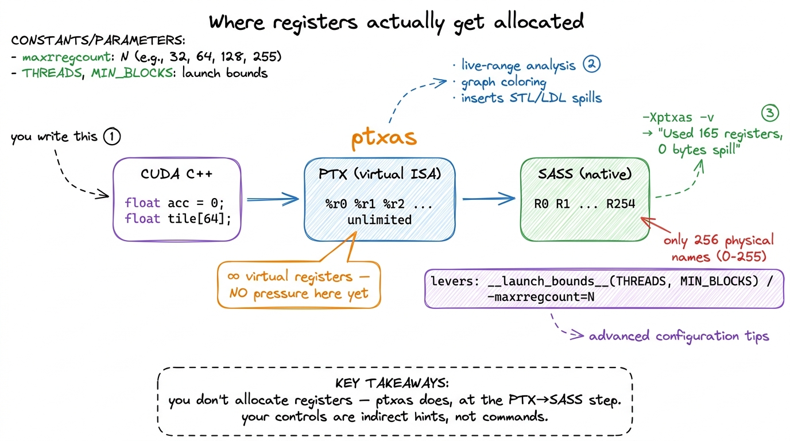

The register file RMEM
Let me start with a question that sounds almost too simple: when a GPU thread adds two numbers, where do those two numbers live at the exact instant the add happens?
Not in global memory. Not in the L2 cache. Not even in shared memory. At the precise moment the math unit fires, both operands and the result have to sit in the one storage that is physically wired directly into the arithmetic pipes — the register file. Every number a thread ever computes on — every partial sum, every loop index, every operand on its way into a multiply — lives, for at least an instant, in a register. Registers are the fastest storage on the entire chip, the only memory that keeps pace with the math units, and they are also the scarcest resource you will fight over.
This article answers one question: why does spending registers well decide whether your kernel reaches 12.8% of cuBLAS or 93.7%? We'll start from what a register physically is, build a single mental model of the register file as a fixed budget, and reuse that picture the whole way down — through occupancy, spilling, and the compiler that actually hands the registers out. You don't need to have read the GEMM ladder first; I'll pull in the numbers as we go and explain each one from scratch.
First, what is a register? Start from the arithmetic
Forget GPUs for a second and think about a pocket calculator. When you compute 3 × 4 + 5, the calculator has to hold 3 and 4 somewhere while it multiplies them, then hold the 12 while it adds 5. That "somewhere" — a tiny scratch slot right next to the arithmetic — is exactly what a register is. It is not memory you address by number like array[7]. It is a named slot the hardware reads and writes in essentially zero time, because it sits inside the compute unit.
A GPU has millions of these little slots. On an H100, each Streaming Multiprocessor (SM) — the GPU's basic compute engine, the rough equivalent of a CPU core, and an H100 has 132 of them — carries a register file (RF) of 256 KB. That is 65536 32-bit registers, packed into fast SRAM sitting directly beside the execution units.1 256 KB / 4 bytes = 65,536 registers exactly. This has held constant across several NVIDIA generations — Volta, Ampere, and Hopper all give each SM a 256 KB register file — even as almost everything else about the SM changed. It is one of the most stable numbers in the whole architecture. The register file is the primary store of bits in between their manipulation by the cores. It is built from a much faster memory technology than the L1 data cache — roughly an order of magnitude faster — because it has to feed the fused-multiply-add (FMA) pipes on essentially every clock without stalling them.
The 32-bit register is the unit of allocation, but registers are dynamically typed by the instruction that reads them. Two adjacent registers can be read as one 64-bit double; a single register can be sliced into two half lanes or four FP8 values. When we say "255 registers," we always mean 255 of the 32-bit slots. Keep that in your head — the whole article is arithmetic on a fixed pool of 65536 of these slots.
Why registers are fast, and everything else is not
Two numbers tell you why registers matter so much. Let's take them one at a time, because they are the foundation for everything that follows.
Latency — how long you wait. Reading a register takes on the order of one clock cycle. There is essentially no wait between issuing an instruction and having its operands in hand. Now compare that to the rest of the memory hierarchy: shared memory costs tens of cycles, L2 a couple hundred, and HBM — the big off-chip DRAM — roughly 500 cycles. Sit with that gap for a moment. A value that lives in a register versus one that lives in HBM is not "a bit slower." It is five hundred times slower to reach. That is the difference between the math unit doing useful work this cycle and the math unit sitting idle for the time it takes to run five hundred more instructions.
Bandwidth — how much you can move at once. The register file on Hopper delivers something on the order of 124 TB/s of operand throughput per SM.2 That 124 TB/s is a per-SM operand-collector figure — how fast the register file can hand operands to the pipes — not a datasheet headline you'll find on a spec sheet. It's an order-of-magnitude number, but the point survives any rounding: it dwarfs even the 3.35 TB/s of aggregate HBM3 bandwidth for the entire 80 GB device, and that HBM figure is shared across all 132 SMs while the 124 TB/s belongs to one. Even a single SM's register file moves operands far faster than the whole device's HBM can supply data.
Put the two together and you get the punchline: the register file is the only level of the hierarchy that can keep the FMA units genuinely saturated. Every optimization on the GEMM ladder is, underneath, a scheme to get more work done out of registers before touching anything slower. Hold that thought — it's the thesis.
 figure rendering · The register file sits at the tip of the pyramid: roughly 500× lower l
figure rendering · The register file sits at the tip of the pyramid: roughly 500× lower lThe mental model: registers are a fixed budget you divide
Here is the one picture I want you to carry through the rest of the article, because everything hangs on it.
Imagine the register file as a single rectangular sheet of graph paper with exactly 65536 squares. That's the whole file for one SM. Now, every thread that wants to run on that SM must be handed its own private stack of squares before it starts, and it keeps them for its entire lifetime. A thread that needs 32 registers gets a block of 32 squares. A thread that needs 128 gets a block of 128. The sheet does not grow. When the squares run out, no more threads can be placed.
That's it. That's the whole tension of this article in one image: fast, but fixed, and divided. The more each thread demands, the fewer threads fit. Keep this graph-paper sheet in mind — we'll come back to it three more times.
 figure rendering · The central mental model: a fixed sheet of 65536 squares, divided amon
figure rendering · The central mental model: a fixed sheet of 65536 squares, divided amonRegisters are private — with exactly one exception
Before we spend the budget, one property makes registers behave the way they do. A register belongs to exactly one thread. When your kernel declares float acc = 0.0f;, every thread — in every warp, in every block — gets its own private acc, and no other thread can read or write it.
Why does this matter? Because privacy is what makes registers a scalable resource. The SM does not have to arbitrate access to registers the way it does for shared memory. There are no cross-thread hazards to serialize, no locks, no bank-conflict machinery. Each thread's registers are carved out of the same 65536-square sheet, but the partition is fixed at launch and invisible to everyone else. This is the calm at the bottom of the memory hierarchy: the fastest storage is also the one with the fewest coordination problems, precisely because nobody shares it.
There is exactly one exception, and it's worth knowing precisely because it is the only one. Threads in the same warp — the group of 32 lanes that execute in lockstep — can read each other's registers directly through the warp shuffle intrinsics: __shfl_sync, __shfl_down_sync, and friends.3 This is not a general "read any thread's register" mechanism — it is strictly within a warp of 32 lanes, and it goes through the register file's read ports, not shared memory. It is how a warp-level reduction or a broadcast happens in a couple of cycles without ever touching shared memory. Outside the warp, register privacy is absolute. A shuffle lets lane i grab the value held in a named register of lane j in the same warp, in a couple of cycles, with no round-trip through shared memory. This is the machinery behind fast warp reductions and broadcasts, and later on the ladder it's how a warp-tiled kernel shares operands among its 32 lanes cheaply. But note the fence: the shuffle is intra-warp only. Two threads in different warps — even in the same block — cannot see each other's registers at all. They must communicate through shared memory or global memory. Privacy is the rule; the warp shuffle is the single, carefully bounded exception.
The tradeoff that decides everything: pressure vs. occupancy
Now we spend the budget, and the tension becomes concrete.
Registers are fast, so you want to keep as much live data in them as possible — accumulators, cached operands, loop-carried values. But the sheet is fixed: 65536 squares per SM, and every resident thread must be allocated its full quota before it runs. So here is the natural question a curious reader should be asking: if registers are so great, why not just give every thread hundreds of them?
Because of a second thing the GPU needs those squares for — hiding latency. Let me build that idea from scratch, since it's the other half of the tradeoff.
When a warp issues a memory load that misses to HBM, it now has to wait ~500 cycles for the data. If that were the end of the story, the SM would sit idle for 500 cycles. It doesn't. Instead, the warp scheduler switches to a different warp that is ready to run, and keeps the math pipes busy while the first warp waits. The instant the load completes, the stalled warp becomes eligible again. This is the GPU's entire strategy for tolerating slow memory: have so many warps resident that there is always at least one ready to run.
The number that captures "how many warps are resident relative to the hardware maximum" is called occupancy, and it's covered in depth in its own article. High occupancy means many warps to hide behind. Low occupancy means stalls show through as idle cycles, because when the running warp stalls there's no one to switch to.
Now watch the collision. Every resident warp costs registers — its 32 threads each need their private block of squares. So the two things you want to do with the register file are in direct conflict:
- Spend registers per thread → more state kept fast, more arithmetic per memory access.
- Keep registers free for more warps → more latency hiding.
You cannot maximize both. The sheet is fixed.
Let's do the arithmetic, because it's unforgiving and it makes the tradeoff exact. Divide the file by per-thread usage: 65536 / regs_per_thread gives the ceiling on resident threads.
- At a lean 32 registers per thread:
65536 / 32 = 2048threads — the full occupancy of a modern SM. - At 64 registers:
65536 / 64 = 1024threads — half. - At 128 registers:
65536 / 128 = 512threads — a quarter.
And there is a hard ceiling: the hardware caps a single thread at 255 registers.4 255 is a hard architectural limit, not a suggestion — the register operand fields in the SASS instruction encoding are simply not wide enough to name a 256th register. If your kernel "wants" more live values than that, the compiler has no choice but to spill, no matter how much of the file is technically free. This is why you'll never see -Xptxas -v report more than 255. At that maximum a thread can host at most 65536 / 255 ≈ 256 threads on the SM — a small fraction of peak. Register pressure is exactly this: the register file becoming the bottleneck that throttles how many warps you can run.
 figure rendering · Occupancy is register-budget arithmetic. Left: lean threads pack the S
figure rendering · Occupancy is register-budget arithmetic. Left: lean threads pack the SWatching the tradeoff pay off: register tiling on the GEMM ladder
That was abstract. Let me make it concrete with a tiny by-hand example, then show it paying off in real kernels.
Suppose a thread needs to compute one output element of a matrix multiply, C[i][j] = sum over k of A[i][k] * B[k][j]. The naive way: for each k, load A[i][k] from shared memory, load B[k][j] from shared memory, multiply, add. Two shared-memory loads (~20-30 cycles each) to feed one FMA (1 cycle). The math unit is starved — it spends almost all its time waiting for operands. That's the naive kernel, and it's why it lands at just 12.8% of cuBLAS.
Now the register-tiling idea. What if one thread computes several output elements — say a small vertical strip C[i..i+7][j] — and holds all eight running sums in a little register array, float thread_results[8]? Then for each k you load B[k][j] once into a register, load the eight A values, and do eight FMAs — reusing that one B operand eight times from the register file instead of re-fetching it from shared memory. You just turned one memory access into eight FMAs. The napkin ratio of loads-to-math went from 2:1 to roughly 1:1 and then better. That reuse is the whole point of registers.
This is 1D register tiling, and it earns a jump to 36.5% of cuBLAS precisely because operands loaded from shared memory now get reused across many FMAs before anything leaves the register file. Push it to 2D tiling — each thread owns a float thread_results[TM * TN] block of outputs, a little patch of C rather than a strip — and the reuse compounds in both dimensions. Real numbers from the worklog: 2D tiling cuts shared-memory reads per output element from about 9,108 down to 2,024, and lands at 68.7% of cuBLAS. Then vectorizing the loads on top — float4 reads that pull four scalars per instruction into reg_m[] and reg_n[] register fragments — carries us to 78.4%.5 The exact ladder numbers vary a little between runs and write-ups — one careful pass reports the 2D-tiling kernel at 36.8% and the vectorized kernel at 72% of cuBLAS FP32. The precise percentages depend on matrix size, clocks, and cuBLAS version. What's invariant is the shape: every rung up spends more registers per thread to buy more arithmetic per memory access. Every one of those wins spends more registers per thread to buy arithmetic intensity. The art is spending just enough.

figure rendering · Zooming into one thread: a 2D register tile turns 16 shared-memory loaWhen you overspend: spilling to local memory
So more registers per thread is good — up to a point. What happens when a thread genuinely needs more live values than it has registers, either because you asked for a huge accumulator tile or because you slammed into the 255 ceiling?
The compiler does not fail. It spills. It picks some register-resident values, stores them to local memory, and reloads them when they're next needed. On paper this sounds harmless — the value is still there, we just parked it somewhere. Here's why it's a disaster.
The name "local memory" is a trap, and it's the single most misleading name in the CUDA memory model. It is not on-chip, and it is not local to anything fast. It is a per-thread private region that physically lives in global memory — HBM — cached through L1 and L2 on the way.6 "Local" refers to scope (private to one thread), not location. A spilled register is an HBM address. If the spill traffic fits in L1/L2 you pay cache latency; if it thrashes, you pay the full ~500-cycle HBM round trip on values you thought were one-cycle registers. Either way the profiler reports it as local memory load/store transactions — a red flag worth grepping for. So a spill silently converts a value you expected to read in one cycle into one that may cost hundreds. Go back to the pyramid: a spill is a value falling from the very top tier all the way to the bottom tier, and you don't get a compile error to warn you.

figure rendering · A spill is visible in the SASS as STL/LDL instructions. Those are HBMWorse, spills tend to land on your hottest values — the ones the register allocator couldn't keep resident precisely because they're used so often — so the penalty compounds. This produces one of the most counterintuitive results in kernel engineering: a kernel that spills in its inner loop can be slower than the same kernel with a smaller tile that fits in registers, even though the smaller tile does "less work per thread." Stop and appreciate how surprising that is. You made each thread do more useful arithmetic, and it got slower. The resolution is the pyramid again: past the spill threshold, the extra "work" is bought with several-hundred-cycle memory accesses, and you'd have been better off leaving the value in a smaller tile that stays in registers. Past a point, asking for more registers makes you slower, not faster.
The full tradeoff in one kernel: warp tiling at 165 registers
You can see both failure modes at once in the warp tiling kernel — the one that ultimately reaches 93.7% of cuBLAS, the top of the SM-core ladder. Profiling an aggressive configuration of it shows about 165 registers per thread.7 Measured with ncu, the padded variant sits at ~167 registers per thread and the unpadded at ~165, both pinning occupancy near 18%. The extra couple of registers come from padding arithmetic; it barely moves the occupancy needle because the binding constraint is the big accumulator tile, not the padding. Run the budget arithmetic: 65536 / 165 ≈ 397 threads, which pins occupancy down near 18%.
And the scheduler statistics confirm the story exactly. Roughly a third of cycles are lost to "not selected" stalls — the scheduler had a warp it wanted to issue, but couldn't, because it was waiting and there was no other ready warp to switch to. The SM simply runs out of warps to hide behind. That's the low-occupancy failure mode, made visible.
So why isn't this kernel slow? Here's the subtle and important part.

figure rendering · Two independent levers for hiding latency. High occupancy fills stallsLow occupancy is not automatically fatal.8 This is the single most important nuance in the article. Occupancy is a means, not the goal — the goal is keeping the math pipes busy. A kernel with enough instruction-level parallelism within each thread — many independent FMAs in flight from a fat register tile — can saturate the pipes at 18% occupancy, which is exactly how the warp-tiled kernel still hits 93.7%. The rule is "hide latency," not "maximize occupancy." There are two independent ways to keep the FMA pipes busy while a memory load is outstanding. One is high occupancy: many warps, so when one stalls another runs. The other is instruction-level parallelism (ILP) within a single thread: if a thread has a fat register tile with many independent accumulators, it can have many FMAs in flight at once, and issue the next one while an earlier operand load is still landing. A fat register footprint costs you occupancy — but it buys you ILP. The warp-tiled kernel spends registers to trade the first lever for the second, and it comes out ahead.
The winning configuration is the one that keeps every thread's tile just below the spill threshold while carrying enough independent accumulators to hide latency without a full warp bench. You do not find that balance by reasoning it out. You find it by measuring — which is exactly why the top of the ladder involves an autotuning sweep. Letting a search explore tile sizes and launch bounds until the register footprint lands in the sweet spot is worth 84.8% of cuBLAS on its own, before warp tiling pushes it to 93.7%.
Who actually hands out the registers: ptxas
We've been saying "the compiler decides" — let's be precise about which compiler, because it changes what levers you actually have.
You never allocate a physical register yourself. You write CUDA, which the front end lowers to PTX — a virtual instruction set with an unlimited supply of virtual registers. At the PTX stage, register pressure literally does not exist; you can name as many virtual registers as you like. The real allocation happens one stage later, when ptxas, the assembler, translates PTX into SASS — the native machine ISA that actually runs on the hardware. (The full PTX-vs-SASS story has its own article.) It is ptxas that performs live-range analysis, decides which values stay resident, colors the register interference graph, and — when it runs out of the 65536 — inserts the spill and reload instructions.9 This is why nvcc -Xptxas -v prints "Used N registers, M bytes smem, K bytes spill stores" — that report is ptxas telling you the result of its allocation pass, after it has already decided what fits and what spills. PTX register counts are meaningless for occupancy; only the SASS number ptxas produces matters.

figure rendering · The allocation happens at the PTX-to-SASS step inside ptxas. Your knobBecause ptxas owns the decision, the levers you have are indirect. __launch_bounds__(maxThreadsPerBlock, minBlocksPerSM) on a kernel tells ptxas your occupancy target, and it will cap register usage to hit it — spilling if it must. The blunter -maxrregcount=N (or -Xptxas --maxrregcount=N) forces a hard ceiling on registers per thread across the whole compilation unit. Both trade the same currency in opposite directions:
- Cap registers lower → you raise the occupancy ceiling but risk spills.
- Let registers run free → you avoid spills but may strand the SM at low occupancy.
There is no universally right setting, because the sweet spot depends on the arithmetic intensity of your specific kernel. That's not a cop-out; it's the reason autotuning exists.
This is not just a GEMM curiosity — it runs your production stack
If you think this only matters for people hand-writing matrix multiplies, look at what's shipping right now. FlashAttention keeps the attention softmax statistics and output accumulators in registers so it never materializes the full attention matrix — the entire trick is a register/shared-memory budget that fits the SM. When the FlashAttention team ports to a new GPU, a huge fraction of the work is re-fitting that register budget to the new SM. In vLLM's paged-attention and decode kernels, register pressure is a first-class tuning axis; the fused kernels DeepSeek ships in DeepGEMM and FlashMLA live or die by keeping accumulators register-resident and spill-free. Every serious inference kernel on an H100 or B200 fleet is, underneath, the exact negotiation this article describes: divide 65536 squares between "more state per thread" and "more warps," and don't spill.10 On Hopper and Blackwell the story gets one more layer: the WGMMA / tcgen05 tensor-core instructions distribute a big output tile across a whole warpgroup of 128 threads, e.g. float d[WGMMA_N/16][8] — 32 float accumulators per thread for an m64n64k16 tile. The register budget is now shared across the warpgroup, and on Blackwell some accumulators move into dedicated tensor memory (TMEM) to relieve register pressure entirely. Same tradeoff, new hardware for it.
The one habit to build
Here's how to put all of this to work, mechanically, every time a kernel underperforms. Before you touch anything, compile with -Xptxas -v and read three numbers:
- Registers per thread. Divide
65536by it to know your occupancy ceiling before the profiler even runs. - Spill stores/loads. If this is nonzero, you have a value that thinks it's a one-cycle register but is really a 500-cycle HBM address. Shrink the tile or the live set until it hits zero.
- The occupancy the profiler reports, plus the scheduler stall breakdown.
Then reason with the pyramid:
- Nonzero spills? You overspent. A one-cycle value has fallen to the bottom of the pyramid. Cut the tile until
STL/LDLvanish from the SASS. - Zero spills but low occupancy and a pile of "not selected" stalls? Ask whether your per-thread ILP is enough to justify the fat footprint. If each thread has many independent FMAs in flight, low occupancy is fine — you're hiding latency with ILP. If not, a smaller tile with more resident warps will hide latency better.
That is the whole game at this level. The register file is fixed at 65536 slots, and every kernel is a negotiation over how to divide them between "more state per thread" and "more threads." Get the split right and the math units never wait. Get it wrong in either direction — too greedy and you spill, too timid and you starve the scheduler — and you leave most of the chip on the table.
Next we drop one level down the pyramid, to the resource you spend registers precisely to avoid touching too often: shared memory, the on-chip scratchpad where a whole block — not just one thread — gets to share.